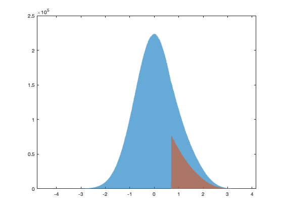
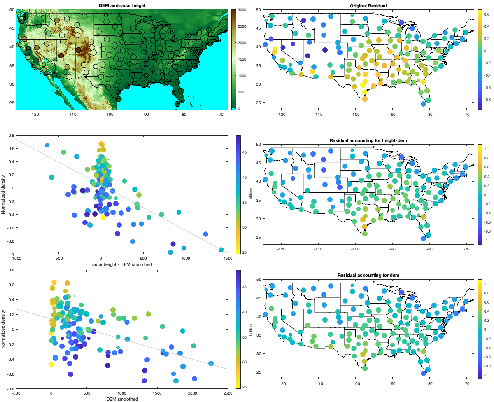
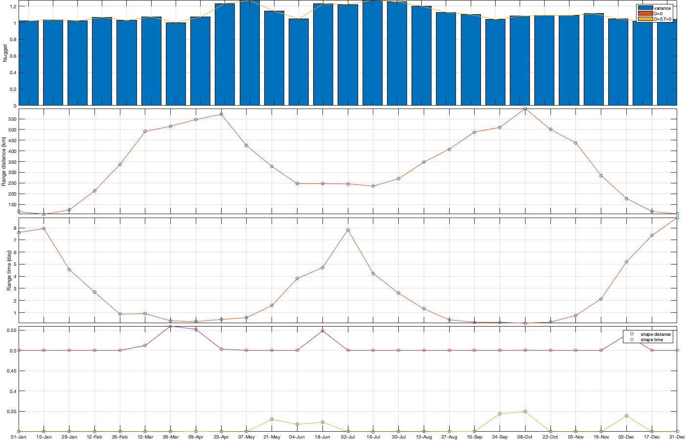

Inference of the Density model
for all years and all radars
Contents
- ---------- PART 1
- STEP1 : Load data
- STEP 2 - cleaning rain
- Remove day data
- Remove rain from list
- Remove outliar with Grubb's day-of-year for high value
- Moving median outliar
- Remove intra-night outliar
- Check the max value of density
- STEP 3: fit a truncated distribution
- STEP 3: Simulate the truncated value
- Distribution and transformation
- Save
- PART 2: Curve and seperation daily and intra-night
- Fit a curve template to compute nightly average
- Space-time pattern of the curve
- Curve as day of year
- Computing the daily curve amplitude and residual
- Save
- ---------- PART 3
- Step 1: yearly trend
- Step 2: Remove altitudinal trend
- Step 3: Remove yealy spatial trend: NOT USED
- Step 4: Remove Spatio-temporal trend
- Step 5: yearly trend in std
- Step 6 spatio-temporal trend in the std.
- Save
- ---------- PART 3
- Visualize some days
- Explore spatio-temporal variation in the covariance function
- Explore distance to radar and radar to radar distance.
- Fit covariance function
- save
- ---------- PART 4
- Covariance
- save
---------- PART 1
Load data, filter, sort, clean an export daily and intra-night data
plotit=true;
STEP1 : Load data
cd('/Users/raphael/Library/CloudStorage/Box-Box/BMM-US/') set(0, 'DefaultAxesBox', 'on'); addpath(genpath('functions')) % Declare radar variable name = {'KABR' 'KABX' 'KAKQ' 'KAMA' 'KAMX' 'KAPX' 'KARX' 'KATX' 'KBBX' 'KBGM' 'KBHX' 'KBIS' 'KBLX' 'KBMX' 'KBOX' 'KBRO' 'KBUF' 'KBYX' 'KCAE' 'KCBW' 'KCBX' 'KCCX' 'KCLE' 'KCLX' 'KCRP' 'KCXX' 'KCYS' 'KDAX' 'KDDC' 'KDFX' 'KDGX' 'KDIX' 'KDLH' 'KDMX' 'KDOX' 'KDTX' 'KDVN' 'KDYX' 'KEAX' 'KEMX' 'KENX' 'KEOX' 'KEPZ' 'KESX' 'KEVX' 'KEWX' 'KEYX' 'KFCX' 'KFDR' 'KFDX' 'KFFC' 'KFSD' 'KFSX' 'KFTG' 'KFWS' 'KGGW' 'KGJX' 'KGLD' 'KGRB' 'KGRK' 'KGRR' 'KGSP' 'KGWX' 'KGYX' 'KHDX' 'KHGX' 'KHNX' 'KHPX' 'KHTX' 'KICT' 'KICX' 'KILN' 'KILX' 'KIND' 'KINX' 'KIWA' 'KIWX' 'KJAN' 'KJAX' 'KJGX' 'KJKL' 'KLBB' 'KLCH' 'KLGX' 'KLIX' 'KLNX' 'KLOT' 'KLRX' 'KLSX' 'KLTX' 'KLVX' 'KLWX' 'KLZK' 'KMAF' 'KMAX' 'KMBX' 'KMHX' 'KMKX' 'KMLB' 'KMOB' 'KMPX' 'KMQT' 'KMRX' 'KMSX' 'KMTX' 'KMUX' 'KMVX' 'KMXX' 'KNKX' 'KNQA' 'KOAX' 'KOHX' 'KOKX' 'KOTX' 'KOUN' 'KPAH' 'KPBZ' 'KPDT' 'KPOE' 'KPUX' 'KRAX' 'KRGX' 'KRIW' 'KRLX' 'KRMX' 'KRTX' 'KSFX' 'KSGF' 'KSHV' 'KSJT' 'KSOX' 'KSRX' 'KTBW' 'KTFX' 'KTLH' 'KTLX' 'KTWX' 'KTYX' 'KUDX' 'KUEX' 'KVAX' 'KVBX' 'KVNX' 'KVTX' 'KVWX' 'KYUX'}'; lat = [45.45583 35.14972 36.98389 35.23333 25.61111 44.90722 43.82278 48.19444 39.49611 42.19972 40.49833 46.77083 45.85389 33.17222 41.95583 25.91611 42.94889 24.5975 33.94861 46.03944 43.49083 40.92306 41.41306 32.65556 27.78417 44.51111 41.15194 38.50111 37.76083 29.27278 32.28 39.94694 46.83694 41.73139 38.82556 42.69972 41.61167 32.53833 38.81028 31.89361 42.58639 31.46056 31.87306 35.70111 30.56444 29.70389 35.09778 37.02444 34.36222 34.63528 33.36361 43.58778 34.57444 39.78667 32.57306 48.20639 39.06222 39.36639 44.49833 30.72194 42.89389 34.88333 33.89667 43.89139 33.07639 29.47194 36.31417 36.73667 34.93056 37.65472 37.59083 39.42028 40.15056 39.7075 36.175 33.28917 41.35889 32.31778 30.48472 32.675 37.59083 33.65389 30.12528 47.11694 30.33667 41.95778 41.60472 40.73972 38.69889 33.98944 37.97528 38.97528 34.83667 31.94333 42.08111 48.3925 34.77611 42.96778 28.11333 30.67944 44.84889 46.53111 36.16861 47.04111 41.26278 37.155 47.52778 32.53667 32.91889 35.34472 41.32028 36.24722 40.86556 47.68028 35.23611 37.06833 40.53167 45.69056 31.15556 38.45944 35.66556 39.75528 43.06611 38.31111 43.46778 45.71472 43.10583 37.23528 32.45083 31.37139 33.81778 35.29056 27.70556 47.45972 30.3975 35.33306 38.99694 43.75583 44.125 40.32083 30.89028 34.83806 36.74083 34.41167 38.26028 32.49528]'; lon = [-98.41306 -106.82389 -77.00722 -101.70917 -80.41278 -84.71972 -91.19111 -122.49583 -121.63167 -75.98472 -124.29194 -100.76056 -108.60667 -86.77 -71.13694 -97.41889 -78.73667 -81.70306 -81.11833 -67.80667 -116.23556 -78.00361 -81.85972 -81.04194 -97.51111 -73.16694 -104.80611 -121.67778 -99.96861 -100.28056 -89.98444 -74.41083 -92.20972 -93.72278 -75.44 -83.47167 -90.58083 -99.25417 -94.26444 -110.63028 -74.06389 -85.45944 -106.69806 -114.89139 -85.92139 -98.02833 -117.56083 -80.27389 -98.97639 -103.63 -84.56583 -96.72944 -111.19778 -104.54583 -97.30306 -106.625 -108.21389 -101.70056 -88.11139 -97.38306 -85.54472 -82.22 -88.32889 -70.25667 -106.12278 -95.07917 -119.63222 -87.285 -86.08333 -97.44278 -112.86222 -83.82167 -89.33694 -86.28028 -95.56472 -111.67 -85.69972 -90.08 -81.70194 -83.35111 -83.31306 -101.81417 -93.21583 -124.10667 -89.82556 -100.57639 -88.08472 -116.80278 -90.68278 -78.42889 -85.94389 -77.47778 -92.26222 -102.18917 -122.71722 -100.865 -76.87611 -88.55056 -80.65417 -88.23972 -93.56556 -87.54833 -83.40167 -113.98611 -112.44778 -121.89833 -97.32556 -85.78972 -117.04194 -89.87333 -96.36667 -86.5625 -72.86389 -117.62667 -97.46222 -88.77194 -80.21833 -118.85278 -92.97583 -104.18139 -78.48972 -119.46222 -108.47722 -81.72306 -75.45806 -122.96556 -112.68611 -93.40056 -93.84139 -100.4925 -117.63583 -94.36167 -82.40167 -111.38528 -84.32889 -97.27778 -96.2325 -75.68 -102.82972 -98.44194 -83.00167 -120.39583 -98.12778 -119.17972 -87.72444 -114.65667]'; hei = [421.5384 1813.5600 77.7240 1128.3696 33.8328 475.7928 413.6136 195.6816 67.3608 519.0744 766.5720 534.9240 1128.3696 231.3432 70.7136 26.8224 240.7920 27.1272 105.1560 262.1280 966.5208 757.4280 262.1280 69.7992 43.2816 131.3688 1887.0168 43.8912 813.8160 364.2360 185.6232 70.1040 469.6968 333.7560 49.9872 370.6368 259.3848 481.8888 332.8416 1620.9264 589.4832 163.6776 1285.3416 1507.8456 67.3608 233.7816 875.3856 903.7320 400.8120 1431.6456 296.2656 455.3712 2289.9624 1709.6232 236.5248 726.6432 3077.8704 1132.3320 245.6688 183.7944 266.7000 325.5264 179.5272 144.4752 1301.1912 35.0520 103.6320 190.1952 566.6232 426.4152 3277.8192 356.6160 222.8088 270.3576 228.2952 434.6448 321.8688 121 48.7680 188.3664 445.3128 1029.3096 41.7576 107.8992 54.5592 948.5376 231.6480 2101.2912 220.0656 44.1960 253.8984 123.1392 197.8152 902.5128 2303.9832 484.6320 44.1960 311.5056 35.3568 88.0872 335.5848 464.5152 437.0832 2431.0848 2009.2416 1081.7352 330.0984 170.6880 320.6496 132.5880 384.6576 206.0448 60.6552 746.1504 420 154.2288 385.8768 481.2792 144.1704 1634.3376 140.8176 2558.4912 1716.3288 369.7224 492 526.6944 1383.1824 419.1000 117.9576 610.5144 946.4040 224.6376 37.1856 1159.4592 53.9496 389.2296 431.2920 597.1032 973.5312 626.9736 100.5840 412.6992 383.4384 855.2688 190.5000 72.8472]'; grd = [396, 1779, 30, 1091, 2, 441, 366, 130, 55, 469, 670, 502, 1097, 193, 21, 7, 211, 1, 64, 200, 914, 700, 228, 27, 13, 91, 1867, 8, 785, 341, 137, 45, 437, 287, 14, 319, 225, 456, 310, 1574, 548, 115, 1252, 1364, 34, 196, 835, 823, 384, 1417, 244, 440, 2255, 1671, 213, 692, 3035, 1116, 208, 161, 230, 274, 128, 91, 1285, 5, 71, 168, 521, 402, 3169, 306, 177, 239, 196, 418, 274, 87, 5, 140, 333, 987, 3, 30, 8, 899, 202, 2011, 180, 16, 188, 88, 169, 870, 2195, 456, 2, 266, 8, 63, 292, 427, 408, 2302, 1930, 1036, 297, 107, 242, 91, 351, 152, 15, 731, 359, 118, 334, 435, 106, 1585, 91, 2436, 1685, 293, 463, 426, 1347, 394, 77, 571, 853, 181, 9, 1097, 14, 358, 396, 548, 915, 598, 51, 365, 359, 792, 152, 40]'; radar = table(name,lat,lon,hei,grd,'VariableNames',{'name','lat','lon','height','dem'}); if plotit figure('position',[0 0 1600 900]);borders('states','color',[.2 .2 .2]*3);axis([-125 -68 23 50]); plot(radar.lon,radar.lat,'ok'); for i_r=1:height(radar) text(radar.lon(i_r),radar.lat(i_r),[radar.name{i_r} ' (' num2str(i_r) ')'],'VerticalAlignment','top','HorizontalAlignment','center') end end % Time g.time = (datetime('1-Jan-1995'):(1/24/4):datetime('31-Dec-2021 23:45:00'))'; % Group data per day % Offset of 7/24 is used because sunrise sunset can occur on another day in % the US [g.day_id,g.day] = findgroups(dateshift(g.time-7/24,'start','day','nearest')); g.day_id = int16(g.day_id); g.time_doy = day(g.day(g.day_id),'dayofyear'); g.day_doy = day(g.day,'dayofyear'); % Define grid value g.lon=single(-125:.25:-68);g.lat=single(23:.25:50); [g.LAT,g.LON]=ndgrid(g.lat,g.lon); bd = load('borderdata.mat'); g.mask_water=true(size(g.LAT)); g.mask_water(inpolygon(g.LAT,g.LON,bd.lat{209}, bd.lon{209}))=false; g.nlm = sum(~g.mask_water(:)); g.nlat = numel(g.lat); g.nlon = numel(g.lon); g.dy = lldistkm([g.lat(1) g.lon(1)],[g.lat(2) g.lon(1)]); g.dx = lldistkm([g.LAT(:,1) g.LON(:,1)],[g.LAT(:,1) g.LON(:,2)]); g.area = repmat(g.dx*g.dy,1,g.nlon); % Read vid vid = readmatrix('data/vid.csv','NumHeaderLines',1,'TreatAsMissing' ,'NA'); % NNT NNT = twilightNNT(g.time, radar.lon, radar.lat); % Refine twilight based on NNT. NNT is computed with a zenith angle of 90°, % but bird only depart/arrive around 90-96°. We define the threashold of % NNT based on the average nightly profile. This profile is checked later % with the intra-night componenet (vidti) [Y,E] = discretize(NNT(:),500); p = splitapply(@(x) mean(x,'omitnan'),vid(:),Y); pq1 = splitapply(@(x) quantile(x,.1),vid(:),Y); pq9 = splitapply(@(x) quantile(x,.9),vid(:),Y); thr_nnt = [-.93 .89]; if plotit figure; hold on; plot(E(1:end-1)+diff(E(1:2)),p,'-r'); plot(E(1:end-1)+diff(E(1:2)),pq1,'--r'); plot(E(1:end-1)+diff(E(1:2)),pq9,'--r'); xline(thr_nnt) end NNT(NNT<thr_nnt(1)|NNT>thr_nnt(2))=nan;
STEP 2 - cleaning rain
% Assess missing value sum(~isnan(NNT(:))) % 64M total number of possible datapoint (15min-145radars-night only) sum(~isnan(vid(~isnan(NNT)))) % 59M datapoints available. % concentrated on a few radar for long period (month-year), mainly 2000-2005 sum(vid(~isnan(NNT))==0) % 9M data are exactly 0 % figure; plot(splitapply(@(x) sum(x==0,'all','omitnan'),vid,g.time_doy)); % Remove data equal to 0 % Some 0 data might be due to no bird at all (e.g. rain), so potentially this % is quite wrong... % But if I leave it, sometimes there are 0 during high bird density. vid(vid==0)=nan; % Another option is to spread the 0 value the same way we do in the next % section % vidL(isinf(vidL))=0; % vidL(vidL==0) = randn(sum(vidL(:)==0),1)/2 + vidL(vidL==0); % visualize the datacoverage if plotit figure; imagesc(datenum(g.time),1:146,log10(vid)','alphadata',vid'~=0); datetick('x'); axis tight; xlabel('date'); ylabel('radar') end
ans =
62671438
ans =
57774589
ans =
9229401
Remove day data
vid(isnan(NNT))=nan;
Remove rain from list
rainList = readtable('data/rain_event_list.xlsx'); for i_rl=1:height(rainList) vid(g.time>=rainList.s(i_rl) & g.time<=rainList.e(i_rl), strcmp(rainList.r{i_rl},radar.name))=0; end
Remove outliar with Grubb's day-of-year for high value
% Approx power transformation to seperate high and low value better. exponant = 0.18; vidOutliar = vid.^exponant; % only consider data after 2012 to get best fit on the threadshold vidOutliar(g.time<datetime('2012-01-01'),:)=nan; % vidOutliar(vid<10)=nan; % perform this opperation 2-3 times to remove outliar in estimation of % threahsold % define the level of confidence. alpha=.1; for i=1:3 % first, compute the mean, variance and sample size per day of year vidL_doy_m = splitapply(@(x) mean(x(:),'omitnan'),vidOutliar,g.time_doy); vidL_doy_std = splitapply(@(x) std(x(:),'omitnan'),vidOutliar,g.time_doy); % vidL_doy_q = splitapply(@(x) quantile(x(:),[.023 .16 .5 .84 .977 .999]),vidL,g.time_doy); vidL_doy_n = splitapply(@(x) sum(~isnan(x(:))),vidOutliar,g.time_doy); % compute the corresponding threashold per day of year and alpha tval = tinv(alpha./vidL_doy_n/2,repmat(vidL_doy_n-2,1,numel(alpha))).^2; G = (vidL_doy_n-1)./sqrt(vidL_doy_n) .* sqrt(tval./(vidL_doy_n-2+tval)); thr = abs(G.*vidL_doy_std+vidL_doy_m); % force value in winter to zero % thr = thr .* [.50:.008:1 ones(1,366-44-63) 1:-.008:.65]'; % We smooth these threahsold with a moving average (cyclical) tmp = 10; thr_smooth = movmean([thr(end-tmp:end) ; thr ; thr(1:tmp)],tmp); thr_smooth = thr_smooth((tmp+2):end-tmp,:); vidOutliar(thr_smooth(g.time_doy)<vidOutliar)=0; end if plotit figure; hold on; plot(g.time_doy,vid.^exponant,'.k') plot(vidL_doy_m,'-r') plot(vidL_doy_m+vidL_doy_std,'--r') plot(thr_smooth,'g') axis tight; xlabel('Day of year'); ylabel('Transformed density') yline([10 1165].^exponant,'-b') end % Apply the correction: apply 0 as value are considered to be less than the % threshold (rain or other) vid(thr_smooth(g.time_doy)<vid.^exponant)=nan;
Moving median outliar
use an exponant more lineant to high value.
exponant2=.13; vidOutliar0 = vid.^exponant2; vidOutliar0(vidOutliar0==0)=nan; vidL_doy_m = splitapply(@(x) mean(x(:),'omitnan'),vidOutliar0,g.time_doy); vidL_doy_std = splitapply(@(x) std(x(:),'omitnan'),vidOutliar0,g.time_doy); % normalize based on day of year tp = (vidOutliar0 - vidL_doy_m(g.time_doy)) ./ vidL_doy_std(g.time_doy); % figure; histogram(tp) % moving median of 12 hours (~1 night) tpo=tp; id_rm=tp>Inf; for i=1:3 tpom = movmedian(tpo,12*4+1,'omitnan'); tpom(isnan(tpo))=nan; id_rm = id_rm | abs(tpo-tpom)>-1/(sqrt(2)*erfcinv(3/2)); tpo(id_rm)=nan; end tprm = tp; tprm(~id_rm)=nan; if plotit figure; hold on; i_r=50; plot(g.time,tp(:,i_r)); plot(g.time,tpom(:,i_r)); plot(g.time,(10^exponant2 - vidL_doy_m(g.time_doy)) ./ vidL_doy_std(g.time_doy),'-b') plot(g.time,tprm(:,i_r),'xr'); end % Outiliar from the median should be smoothed from values arround. vid(id_rm)=nan;
Remove intra-night outliar
if false % Remove data for entire night if not enought datapoint vidT_d_nb0 = splitapply(@(x) sum(~isnan(x)),vid,g.day_id); % plot if plotit figure; histogram(vidT_d_nb0); xlabel('Number of datapoint per night with valid value (i.e. not nan)') end % Delete night with less than ... datapoint (.. x 15 min) tmp = vidT_d_nb0<=4*3; vid(tmp(g.day_id,:))=nan; vidOutliar0 = vid.^exponant2; vidOutliar0(vidOutliar0==0)=nan; tp = (vidOutliar0 - vidL_doy_m(g.time_doy)) ./ vidL_doy_std(g.time_doy); % compute daily and intra-night vidTd = splitapply(@(x) mean(x,'omitnan'),tp,g.day_id); vidTi = tp-vidTd(g.day_id,:); % figure; plot(g.time_doy,vidTi,'.k') % Filter intra-night datapoint outside n = sum(~isnan(vidTi(:))&vidTi(:)~=0); alpha=.05; tval = tinv(alpha./n./2,n-2).^2; G = (n-1)/sqrt(n) * sqrt(tval./(n-2+tval)); thr = abs(G*std(vidTi(:),'omitnan')+mean(vidTi(:),'omitnan')); % figure; hold on; histogram(vidTi); xline(thr) id_rm=abs(vidTi)>1; cond=true; while cond id_rm = id_rm| (abs(vidTi)>thr); % Apply tp(id_rm)=nan; vidTd = splitapply(@(x) mean(x,'omitnan'),tp,g.day_id); vidTi = tp-vidTd(g.day_id,:); max(abs(vidTi(:))) if max(abs(vidTi(:)))<=thr cond=false; end end % check histogram figure; tiledlayout('flow','TileSpacing','tight','Padding','tight'); nexttile; histogram(vidTd); title('daily'); axis tight; nexttile; histogram(vidTi); title('nightly'); axis tight; vidT_d_nb0 = splitapply(@(x) sum(~isnan(x)),tp,g.day_id); figure; histogram(vidT_d_nb0) tmp = vidT_d_nb0<=4*3; vid(tmp(g.day_id,:))=nan; % Apply vid(id_rm) = nan; end
Check the max value of density
if false checkValue = vid; %vidOutliar./thr_smooth(g.time_doy,2); % vid % checkValue(g.time_doy<70 | g.time_doy>325,:)=nan; [a,id]=sort(checkValue(:)); id=flipud(id(~isnan(a))); tmp =squareform(pdist(id(1:1000)))<4*24*2; tmp(eye(height(tmp))==1)=false; id =id(~any(triu(tmp))); [id_t,id_r] = ind2sub(size(vid),id); vid(id_t(1),id_r(1)) m=400; % u=206 vid 1165 bird/km^2 % u=103 for u=10:1000 tmp =minutes(g.time(id_t(u))-dateshift(g.time(id_t(u)),'start','year'))/15; txt=(['i_r=' num2str(id_r(u)) ';i_y=' num2str(year(g.time(id_t(u)))-1995+1)... ';filename <- paste0("../benjamin/", radar.list[i_r], year.list[i_y] ,".rds")'... ';filename;vpts <- readRDS(filename);'... ' sd_vvp_threshold(vpts) <- 1;'... 'vpts.reg <- regularize_vpts(vpts,date_min=as.POSIXct(paste0(year.list[i_y],"-01-01"), tz="UTC"),date_max=as.POSIXct(paste0(year.list[i_y],"-12-31 23:45"), tz="UTC"),interval = 15,fill = 7.5,units="mins");'... 'vpts.reg.f = filter_dbzh(vpts.reg, threshold=500, height=2000, agl_max=Inf, drop=F, quantity="dens");'... 'vpits <-integrate_profile(vpts.reg.f, alt_min="antenna"); '... 'u=' num2str(tmp) ';'... 'par(mfrow=c(4,1), mar = c(2, 2, 0, 0));span = u+(-m:m);plot(vpts.reg[span]);plot(vpts.reg[span],quantity = "DBZH");plot(vpts.reg.f[span]);plot(vpits$datetime[span],vpits$vid[span],ylab="dens integrated",xaxs="i")']); clipboard('copy',txt) radar.name(id_r(u)) g.time(id_t(u)) %tmp_vid = vid(id_t(u)+(-m:m),id_r(u)); % tmp_vid(isnan(tmp_vid))=0; answer = inputdlg({'Start date:','End date:','comment'},'Input',[1 35],{datestr(g.time(id_t(u))),datestr(g.time(id_t(u))),''}); if ~isempty(answer) if answer{3}=="keyboard" keyboard end rainList=[rainList;{radar.name(id_r(u)) datetime(answer{1}) datetime(answer{2}) answer{3}}]; if answer{3}=="save" writetable(rainList,'data/rain_event_list.xlsx') end end end writetable(rainList,'data/rain_event_list.xlsx') end
STEP 3: fit a truncated distribution
% clearning process so far: % day -> nan % rain -> 0 and other manual removed % outliar day-of-year -> 0 (rain or other non-bird echos % outliar within the night -> nan (not sure what they are, so nan is more appropriate)
truncated threashold Below this threashodl, nothing matters...
trans.thr = 10; % thus zero are any value below the threashold % mainly rain and over low value in the winter. simplify a lot the rest. % vid(vid==0)=nan; % threshold as percent of the dataset trans.thr_percent = 1-mean(vid(~isnan(vid))>=trans.thr); trans.thr_T = norminv(trans.thr_percent); X = vid(vid>=trans.thr); % Fitting gaussian tail trans.ms = fminsearch( @(x) fminfitgaustrunc(X,trans,x),[0 3]); [~,trans.lambda] = fminfitgaustrunc(X,trans,trans.ms); trans.f = @(X) ((X.^trans.lambda-1)/trans.lambda - trans.ms(1)) / trans.ms(2); trans.f_inv = @(X) real((( X .* trans.ms(2) + trans.ms(1) ) .* trans.lambda + 1 ) .^(1/trans.lambda)); % Create truncated variable vidT = ((vid.^trans.lambda-1)/trans.lambda - trans.ms(1)) / trans.ms(2); vidT(vid<trans.thr)=nan; if plotit figure; hold on; ed = -2:.1:3; histogram(((vid.^trans.lambda-1)/trans.lambda - trans.ms(1)) / trans.ms(2),ed) histogram(vidT,ed) xline(trans.thr_T,'linewidth',2) plot(ed,normpdf(ed)*6000000,'linewidth',2) end
STEP 3: Simulate the truncated value
% sample value on the left side of the truncated gaussian X=normrnd(0,.8,sum(vid<trans.thr,'all','omitnan'),1); % Enforce that all the value are below the threshold cond=true; while (cond) X(X>trans.thr_T) = normrnd(0,.8,sum(X>trans.thr_T),1); if (sum(X>trans.thr_T)==0) cond=false; end end % figure; histogram(X) % % Option 1: fill by distance % % % sort the turncated value % Ddist = squareform(pdist([radar.lat radar.lon],@lldistkm)); % % coefficient space-time 100 km -> 1 days ~ 1 km = 15minutes % Ddist = Ddist * 1/100 * 1/days(diff(g.time(1:2))); % Ddist = Ddist.^2; % % % construct the matrix of distance to closest point for each radar % % seperatly % Dtime=nan(size(vidT0)); % for i_r=1:height(radar) % Dtime(:,i_r) = bwdist(vidT0(:,i_r)>0); % end % Dtime=Dtime.^2; % % % find the closest distance % Ddt=nan(size(vidT0)); % for i_r=1:height(radar) % Ddt(:,i_r)=min(sqrt(Dtime + Ddist(i_r,:)),[],2); % end % %figure; plot(Ddt(:,1)) % % % Sort by distance % [~,id_s]=sort(Ddt(vidT0==0)); % Option 2: based on original valuevalue % But we need to interpolate value of zero with nearby value because zero % is not good for the transformation. vidinterp = (vid.^trans.lambda-1) / trans.lambda; vidinterp(vid==0)=nan; % set all value at the max possible below threashold vidinterp(vid>=trans.thr) = (trans.thr.^trans.lambda-1) / trans.lambda; % only interpolate vid==0 vidinterpout = fillmissing(vidinterp,'linear','MissingLocations',vid==0); % check taht no value are above threadhosl assert(~all(vidinterpout(:)>trans.thr),'all value need to be below threshold') if plotit figure; hold on; plot(vidinterpout(:,1),'.r') plot(vidinterp(:,1),'.k') end % get the sorted index [~,id_s]=sort(vidinterpout(vid<trans.thr),'descend'); % assign the value to the left side X = sort(X,'descend'); tmp = nan(size(X)); tmp(id_s) = X; vidTS=vidT; vidTS(vid<trans.thr)=tmp; % vidT2(isnan(vidT))=nan; if plotit i_r =10; figure; hold on; plot(g.time, vidTS(:,i_r),'r') plot(g.time, vidT(:,i_r),'k') figure; hold on; histogram(vidTS,'EdgeAlpha',0) histogram(vidT,'EdgeAlpha',0) end
Distribution and transformation
% Threashold all value below 10 bird/km as no bird migrating trans.thr = 10; %svid =sort(vid(:)); %plot(svid,cumsum(svid)); vidth=vid-trans.thr; vidth(vidth<=0)=nan; % Indicator vidI = double(vid>trans.thr); vidI(isnan(vid))=nan;
% Transofrm with boxcox % [vidthT,lambda] = boxcox(vidth(:)); lambda = .1; vidT = (vidth.^lambda-1)/lambda;
% Illustration figure; subplot(2,1,1);histogram(vidth(:)); title('Histogram of threasholed density)'); axis tight subplot(2,1,2);histfit(vidT(:)); title('Histogram of de-clutered (density)'); axis tight
if plotit figure;tiledlayout('flow','TileSpacing','tight','Padding','tight') for i_doy=1:14:366 nexttile; hold on; histogram(vidTS(g.time_doy>i_doy&g.time_doy<(i_doy+7),:),-5:.1:15); xlim([-5 5]); title(datestr(g.day(i_doy),'dd-mmm')) end end
Save
save only a boolen of value above threashold.
vidTS_id = vidTS>trans.thr_T; save('data/density/inference-trans.mat','radar','g','trans','vidTS','vidTS_id','thr_nnt')
PART 2: Curve and seperation daily and intra-night
Intra night scale Trend
load('data/density/inference-trans.mat') % by construction vidT = vidTS; vidT(~vidTS_id)=nan; % recompute (rather than store it) NNT = twilightNNT(g.time, radar.lon, radar.lat); NNT(NNT<thr_nnt(1)|NNT>thr_nnt(2))=nan;
Fit a curve template to compute nightly average
% compute the daily average vidTd = splitapply(@(x) mean(x,'omitnan'),vidTS,g.day_id); vidTi = vidT-vidTd(g.day_id,:); if plotit figure; subplot(1,2,1);histogram(vidTd(:)); xlabel('Histogram of daily scale'); axis tight; subplot(1,2,2);histogram(vidTi(:)); xlabel('Histogram of intra-night scale'); axis tight; end
Space-time pattern of the curve
Too complex to account for the spatial variation.
dx=.1; axis_nnt = -.9:dx:.9; lim = [-125 -68 23 50]; id_spau = sum([g.time_doy>90 g.time_doy>150 g.time_doy>220 g.time_doy>270],2); id_spau(id_spau==0)=4; m=.05; axes_f = @(lon,lat) [((lon+125)/(125-68))-m/2 ((lat-23)/(50-23))-m/2 m m]; if plotit figure('position',[0 0 1600 900]); ha=tight_subplot(1,1,0,0,0); borders('states','-k','linewidth',2); axis([-125 -68 23 50]) for i_r=1:height(radar) ax=axes('Position', axes_f(radar.lon(i_r), radar.lat(i_r) )); box on; hold on; for i_s=1:4 Y = discretize(NNT(id_spau==i_s,i_r),[axis_nnt(1)-dx/2 axis_nnt+dx/2]); res = splitapply(@(x) mean(x,'omitnan'),vidTi(id_spau==i_s,i_r),findgroups(Y)); plot(ax,axis_nnt,res) end plot([-1 1],[0 0],'--k') ax.YTick=''; ax.XTick='';ylim([-.5 .5]) % ax.Color='none'; end legend('Spring','Summer','Autumn','Winter','Position',[0.05 0.05 0.3 .1]) end
Curve as day of year
itrend.dnnt=.05; itrend.axis_nnt = -1:itrend.dnnt:1; dm=14; m=1:dm:366; empIntraNNT=nan(numel(itrend.axis_nnt),numel(m)); empIntraNNTSTD=nan(numel(itrend.axis_nnt),numel(m)); for i_m=1:numel(m) idm = mod(g.time_doy-m(i_m),366-dm) <= dm & mod(g.time_doy-m(i_m),366-dm) <= dm; Y = discretize(NNT(idm,:),[itrend.axis_nnt(1)-itrend.dnnt/2 itrend.axis_nnt+itrend.dnnt/2]); id = unique(reshape(Y,1,[])); id =sort(id(~isnan(id))); empIntraNNT(id,i_m) = splitapply(@(x) mean(x,'omitnan'),reshape(vidTi(idm,:),1,[]),findgroups(reshape(Y,1,[]))); empIntraNNTSTD(id,i_m) = splitapply(@(x) std(x,'omitnan'),reshape(vidTi(idm,:),1,[]),findgroups(reshape(Y,1,[]))); end tmp=fillmissing(movmean(empIntraNNT,3,'omitnan')','nearest',2); itrend.nnt_m = interp1(m,tmp,1:366); tmp=fillmissing(movmean(empIntraNNTSTD,3,'omitnan')','nearest',2); itrend.nnt_std = interp1(m,tmp,1:366); % itrend.nnt_std(itrend.nnt_std<0.15)=0.15; if plotit figure('position',[0 0 1400 900]); subplot(1,2,1); surf(itrend.axis_nnt,1:366,itrend.nnt_m,'EdgeColor','none'); xlabel('NNT'); ylabel('Day of year') subplot(1,2,2); surf(itrend.axis_nnt,1:366,itrend.nnt_std ,'EdgeColor','none'); xlabel('NNT'); ylabel('Day of year') end
Computing the daily curve amplitude and residual
% find index in NNT DOY id_nnt = round(NNT/itrend.dnnt)+1/itrend.dnnt+1; id_nnt_doy = sub2ind(size(itrend.nnt_m), repmat(g.time_doy,1,height(radar)), id_nnt); % compute the curve itrend_nnt_m_vidti = nan(size(vidTi)); itrend_nnt_m_vidti(~isnan(id_nnt_doy)) = itrend.nnt_m(id_nnt_doy(~isnan(id_nnt_doy))); %compute the curve std itrend_nnt_std_vidti = nan(size(vidTi)); itrend_nnt_std_vidti(~isnan(id_nnt_doy)) = itrend.nnt_std(id_nnt_doy(~isnan(id_nnt_doy))); %remove the curve on the data (without applying the std) vidTSdc = vidTS - itrend_nnt_m_vidti; % compute the daily vidTSd = splitapply(@(x) mean(x,'omitnan'),vidTSdc,g.day_id); % and the intra, but with applying the std correction vidTSi = (vidTSdc-vidTSd(g.day_id,:)) ./ itrend_nnt_std_vidti; if plotit figure; subplot(2,1,1); histogram(vidTSd) subplot(2,1,2); histogram(vidTSi) %figure; plot(NNT(:),vidTSi(:),'.k') %figure; plot(g.time,vidTSi(:,1)) %figure; plot(g.day,vidTSd(:,1)) end
Save
save('data/density/inference-daily-intra.mat','vidTSi','vidTSd','itrend')
---------- PART 3
Daily value
% load data load('data/density/inference-trans.mat','g','radar','vidTS_id') load('data/density/inference-daily-intra.mat','vidTSd') v1=vidTSd;
Step 1: yearly trend
if plotit % Multi-year pattern: small: ingore y = year(g.day); y(y==2022)=2021; figure('position',[0 0 1000 400]); hold on h1=scatter(y,v1,'.k'); h2=plot(1995:2021,splitapply(@(x) mean(x,'all','omitnan'),v1,y-1994),'or'); tmp1=repmat(y,size(v1,2),1); tmp1(isnan(v1(:)))=[]; tmp2=v1(~isnan(v1(:))); p1=polyfit(tmp1,tmp2,4); h3=plot(1995:2021,polyval(p1,1995:2021),'-r','linewidth',2); xlabel('year'); ylabel('Normalized density'); legend([h1(1) h2(1) h3],'Daily average per radar','Yearly average','polyfit') end tmp = splitapply(@(x) mean(x,'all','omitnan'),v1,g.day_doy); daytrend.m_doy = smooth(tmp,14); daytrend.m_doy(daytrend.m_doy<min(tmp)| isnan(daytrend.m_doy))=min(tmp); if plotit figure('position',[0 0 1000 400]); hold on h1=scatter(g.day_doy,v1,'.k'); h2=plot(1:366,splitapply(@(x) mean(x,'all','omitnan'),v1,g.day_doy),'-r'); plot(1:366,daytrend.m_doy,'-r','linewidth',2) xlabel('Day of the year'); ylabel('Normalized density'); legend('Daily average per radar','Daily average','polyfit') axis tight; % Radar per radar: There is a small offset of peak migration along the North/South gradient. But not significant enough to be used here. figure('position',[0 0 1000 400]); hold on; tmp =splitapply(@(x) mean(x,'all','omitnan'),v1,g.day_doy); col_i=1+round((radar.lat-min(radar.lat)) / (max(radar.lat)-min(radar.lat))*255); col=parula; for i_r=1:height(radar) plot(1:366,splitapply(@(x) mean(x,'all','omitnan'),v1(:,i_r),g.day_doy)-tmp,'.','color',col(col_i(i_r),:)) end axis tight; xlabel('Day of the year'); ylabel('residual (normalized density - daily average)'); c=colorbar; c.Label.String='Lattitude'; end % Remove the trend v2 = v1 - daytrend.m_doy(g.day_doy);
Step 2: Remove altitudinal trend
% DEM load('data/DEM/dem'); dem=double(dem); dem(dem==-9999)=-2; % figure('position',[0 0 1200 675]); % tiledlayout(2,2,'TileSpacing','tight','Padding','tight') % nexttile; % imagesc(dem_lon,dem_lat,dem) % axis equal; axis([-125 -68 23 50]); demcmap([-1 3000]); % borders('states','k'); set(gca,'ydir','normal');title('no smoothing') % nexttile; % imagesc(dem_lon,dem_lat,imgaussfilt(dem,[100 100])) % axis equal; axis([-125 -68 23 50]); demcmap([-1 3000]); % borders('states','k'); set(gca,'ydir','normal');title('100x100') % nexttile; % imagesc(dem_lon,dem_lat,imgaussfilt(dem,[100 10])) % axis equal; axis([-125 -68 23 50]); demcmap([-1 3000]); % borders('states','k'); set(gca,'ydir','normal'); title('100x10') % nexttile; % imagesc(dem_lon,dem_lat,imgaussfilt(dem,[100 1])) % axis equal; axis([-125 -68 23 50]); demcmap([-1 3000]); % borders('states','k'); set(gca,'ydir','normal');title('100x1') demsm = imgaussfilt(dem,[100 100]); demsmf=griddedInterpolant({dem_lat,dem_lon},demsm); radar.demsm=demsmf([radar.lat,radar.lon]); daytrend.g_dem=demsmf({g.lat,g.lon}); w = sum(~isnan(v2))'; daytrend.f_heightdem = fit(radar.height-radar.demsm,mean(v2,'omitnan')','poly1','weights',w); mean_vidtd_hm = mean(v2,'omitnan')' - daytrend.f_heightdem(radar.height-radar.demsm); daytrend.f_dem=fit(radar.demsm,mean_vidtd_hm,'poly1','weights',w); mean_vidtd_hm2 = mean_vidtd_hm - daytrend.f_dem(radar.demsm); if plotit figure('position',[0 0 1200 1200]); tiledlayout(3,2,'TileSpacing','tight','Padding','tight') nexttile; hold on; imagesc(dem_lon,dem_lat,dem) scatter(radar.lon,radar.lat,w/50,radar.height,'filled','MarkerEdgeColor','k'); colorbar; axis equal; axis([-125 -68 23 50]) demcmap([-1 3000]); borders('states','k'); title('DEM and radar height') ax=nexttile; hold on; borders('states','k'); scatter(radar.lon,radar.lat,w/50,mean(v2,'omitnan'),'o','filled') axis equal; axis([-125 -68 23 50]); colormap(ax,'parula');colorbar; % caxis([-1.1 1.1]) title('Original Residual') ax=nexttile; hold on; scatter(radar.height-radar.demsm,mean(v2,'omitnan'),w/50,radar.lat,'o','filled'); lsline; xlabel('radar height - DEM smoothed'); ylabel('Normalized density'); c=colorbar;c.Label.String='Latitude'; colormap(ax,flipud(parula)); ax=nexttile; hold on;borders('states','k'); scatter(radar.lon,radar.lat,w/50,mean_vidtd_hm,'o','filled') axis equal; axis([-125 -68 23 50]); colormap(ax,'parula');colorbar; caxis([-1.1 1.1]) title('Residual accounting for height-dem') ax=nexttile; hold on; scatter(radar.demsm,mean_vidtd_hm,w/50,radar.lat,'o','filled'); lsline; xlabel('DEM smoothed'); ylabel('Normalized density'); c=colorbar;c.Label.String='Latitude'; colormap(ax,flipud(parula)); ax=nexttile; hold on;borders('states','k'); scatter(radar.lon,radar.lat,w/50,mean_vidtd_hm2,'o','filled') axis equal; axis([-125 -68 23 50]); colormap(ax,'parula');colorbar; caxis([-1.1 1.1]) title('Residual accounting for dem') figure('position',[0 0 675 675]); subplot(2,1,1); hold on imagesc(dem_lon(1:3:end),dem_lat(1:3:end),reshape(daytrend.f_dem(demsm(1:3:end,1:3:end)),size(demsm(1:3:end,1:3:end),1),[]));borders('states','k'); scatter(radar.lon,radar.lat,w/50,mean_vidtd_hm,'filled','MarkerEdgeColor','k'); colorbar; axis equal; axis([-125 -68 23 50]); caxis([-.6 .6]); set(gca,'ydir','normal'); title('Effect of Smoothed DEM') subplot(2,1,2); hold on; borders('states','k'); scatter(radar.lon,radar.lat,w/50,mean_vidtd_hm2,'filled','MarkerEdgeColor','k'); colorbar; axis equal; axis([-125 -68 23 50]) set(gca,'ydir','normal'); title('Residual after accounting for DEM'); caxis([-.6 .6]) end % remove altitude trend v3 = v2 - daytrend.f_heightdem(radar.height-radar.demsm)' - daytrend.f_dem(radar.demsm)';
Step 3: Remove yealy spatial trend: NOT USED
% Year-to-year fluctuation: none or little year_mean=splitapply(@nanmean,v3(1:end-1,:),(year(g.day(1:end-1))-1994)); if plotit figure('position',[0 0 1200 675]); ha = tight_subplot(5,5,[.03 .01],[.01 .03],.01); for i=1:25 axes(ha(i)); hold on; title(1995+i) borders('states','k'); scatter(radar.lon,radar.lat,100,year_mean(i,:)-nanmean(v3),'o','filled') axis equal; axis([-125 -68 23 50]); caxis([-.5 .5]) end % figure; plot(year_mean); % figure; hold on; plot(year_mean','.k'); plot(nanstd(year_mean),'.r','markersize',25) % figure; boxplot(year_mean) end
Step 4: Remove Spatio-temporal trend
% Make group per time of dm days dm=14; daytrend.sf_m=1:dm:366; daytrend_sf_mean_R =nan(height(radar),numel(daytrend.sf_m)); daytrend_sf_mean_LL=nan(size(g.LAT,1),size(g.LAT,2),numel(daytrend.sf_m)); for i_m=1:numel(daytrend.sf_m) idm = mod(g.day_doy-daytrend.sf_m(i_m),366-dm) <= dm & mod(g.day_doy-daytrend.sf_m(i_m),366-dm) <= dm; tmp = mean(v3(idm,:),'omitnan')'; w = sum(~isnan(v3(idm,:)))'; if sum(~isnan(tmp))<=5 daytrend.sf_mean{i_m} =[]; daytrend_sf_mean_LL(:,:,i_m)=0; daytrend_sf_mean_R(:,i_m) = tmp; else daytrend.sf_mean{i_m} = fit([radar.lon(~isnan(tmp)),radar.lat(~isnan(tmp))],tmp(~isnan(tmp)), 'lowess','weights',w(~isnan(tmp))); % cubicinterp smoothingspline lowess daytrend_sf_mean_LL(:,:,i_m) = reshape(daytrend.sf_mean{i_m}([g.LON(:) g.LAT(:)]),size(g.LAT)); daytrend_sf_mean_R(:,i_m) = daytrend.sf_mean{i_m}([radar.lon(:) radar.lat(:)]); end end if plotit figure('position',[0 0 675 675]); tiledlayout('flow','TileSpacing','tight','Padding','tight') for i_m=1:numel(daytrend.sf_m) nexttile; hold on; imagesc(g.lon,g.lat,daytrend_sf_mean_LL(:,:,i_m),'alphadata',~g.mask_water) borders('states','k'); idm = mod(g.day_doy-daytrend.sf_m(i_m),366-dm) <= dm & mod(g.day_doy-daytrend.sf_m(i_m),366-dm) <= dm; tmp = mean(v3(idm,:),'omitnan')'; w = sum(~isnan(v3(idm,:)))'; scatter(radar.lon(~isnan(tmp)),radar.lat(~isnan(tmp)),w(~isnan(tmp))/6,tmp(~isnan(tmp)),'o','filled','MarkerEdgeColor','k') axis equal; axis([-125 -68 23 50]); xticklabels(''); yticklabels(''); caxis([-1 1]); title(datestr(g.day(daytrend.sf_m(i_m)),'dd-mmm')) end end daytrend_sf_mean_Rfull = interp1((daytrend.sf_m(1)-5*dm):dm:(daytrend.sf_m(end)+5*dm),daytrend_sf_mean_R(:,[(end-4):end 1:end 1:5])',1:366,'spline'); % remove spatial pattern v4 = v3 - daytrend_sf_mean_Rfull(g.day_doy,:); if plotit % Check residual per month figure('position',[0 0 675 675]); tiledlayout('flow','TileSpacing','tight','Padding','tight') for i_m=1:numel(daytrend.sf_m) nexttile; hold on; borders('states','k'); idm = mod(g.day_doy-daytrend.sf_m(i_m),366-dm) <= dm & mod(g.day_doy-daytrend.sf_m(i_m),366-dm) <= dm; tmp = mean(v4(idm,:),'omitnan')'; scatter(radar.lon(~isnan(tmp)),radar.lat(~isnan(tmp)),100,tmp(~isnan(tmp)),'o','filled','MarkerEdgeColor','k') axis equal; axis([-125 -68 23 50]); xticklabels(''); yticklabels(''); caxis([-1 1]); title(datestr(g.day(daytrend.sf_m(i_m)),'dd-mmm')) end end
Step 5: yearly trend in std
% t_g.day_doyt_fit = repmat(g.day_doy,size(v4,2),1); % t_vidtddt_fit = [v4(:);v4(t_g.day_doyt_fit<50);v4(t_g.day_doyt_fit>300)].^2; % t_g.day_doyt_fit = [t_g.day_doyt_fit; t_g.day_doyt_fit(t_g.day_doyt_fit<50)+366 ; t_g.day_doyt_fit(t_g.day_doyt_fit>300)-366]; % t_g.day_doyt_fit(isnan(t_vidtddt_fit))=[]; % t_vidtddt_fit(isnan(t_vidtddt_fit))=[]; % daytrend.p_var_doy=polyfit(t_g.day_doyt_fit,t_vidtddt_fit,20); % daytrend.f_std_doy= @(x) sqrt(polyval(daytrend.p_var_doy,x)); tmp = splitapply(@(x) std(x(:),'omitnan'),v4,g.day_doy); tmp([1 end]) = mean(tmp,'omitnan'); daytrend.std_doy = smooth(tmp,21); if plotit figure('position',[0 0 1000 400]); hold on h1=scatter(g.day_doy, abs(v4) ,'.k'); h2=plot(1:366,splitapply(@(x) std(x(:),'omitnan'),v4,g.day_doy),'or'); h3=plot(1:366,daytrend.std_doy(1:366),'-r','linewidth',2); xlabel('Day of the year'); ylabel('abs( Normalized density )'); legend([h1(1) h2(1) h3],'Daily average per radar','Daily average','polyfit') axis tight; end v5 = v4 ./ daytrend.std_doy(g.day_doy);
Step 6 spatio-temporal trend in the std.
dm=14; daytrend.sf_m=1:dm:366; daytrend_sf_std_R =nan(height(radar),numel(daytrend.sf_m)); daytrend_sf_std_LL=nan(size(g.LAT,1),size(g.LAT,2),numel(daytrend.sf_m)); for i_m=1:numel(daytrend.sf_m) idm = mod(g.day_doy-daytrend.sf_m(i_m),366-dm) <= dm & mod(g.day_doy-daytrend.sf_m(i_m),366-dm) <= dm; tmp = std(v5(idm,:),'omitnan')'; w = sum(~isnan(v5(idm,:)))'; if sum(~isnan(tmp))<=5 daytrend.sf_std{i_m} =[]; daytrend_sf_std_LL(:,:,i_m)=1; daytrend_sf_std_R(:,i_m) = tmp; else daytrend.sf_std{i_m} = fit([radar.lon(~isnan(tmp)),radar.lat(~isnan(tmp))],tmp(~isnan(tmp)), 'lowess', 'weights',w(~isnan(tmp))); % cubicinterp smoothingspline lowess daytrend_sf_std_LL(:,:,i_m) = reshape(daytrend.sf_std{i_m}([g.LON(:) g.LAT(:)]),size(g.LAT)); daytrend_sf_std_R(:,i_m) = daytrend.sf_std{i_m}([radar.lon(:) radar.lat(:)]); end end if plotit figure('position',[0 0 675 675]); tiledlayout('flow','TileSpacing','tight','Padding','tight') for i_m=1:numel(daytrend.sf_m) nexttile; hold on; imagesc(g.lon,g.lat,daytrend_sf_std_LL(:,:,i_m),'alphadata',~g.mask_water) borders('states','k'); idm = mod(g.day_doy-daytrend.sf_m(i_m),366-dm) <= dm & mod(g.day_doy-daytrend.sf_m(i_m),366-dm) <= dm; tmp = std(v5(idm,:),'omitnan')'; w = sum(~isnan(v5(idm,:)))'; scatter(radar.lon(~isnan(tmp)),radar.lat(~isnan(tmp)),w(~isnan(tmp))/6,tmp(~isnan(tmp)),'o','filled','MarkerEdgeColor','k') axis equal; axis([-125 -68 23 50]); xticklabels(''); yticklabels(''); caxis([0.5 1.5]); title(datestr(g.day(daytrend.sf_m(i_m)),'dd-mmm')) end end daytrend_sf_std_Rfull = interp1((daytrend.sf_m(1)-5*dm):dm:(daytrend.sf_m(end)+5*dm),daytrend_sf_std_R(:,[(end-4):end 1:end 1:5])',1:366,'spline'); % remove spatial pattern v6 = v5 ./ daytrend_sf_std_Rfull(g.day_doy,:); if plotit % Check residual per month figure('position',[0 0 675 675]); tiledlayout('flow','TileSpacing','tight','Padding','tight') for i_m=1:numel(daytrend.sf_m) nexttile; hold on; borders('states','k'); idm = mod(g.day_doy-daytrend.sf_m(i_m),366-dm) <= dm & mod(g.day_doy-daytrend.sf_m(i_m),366-dm) <= dm; tmp = std(v6(idm,:),'omitnan')'; scatter(radar.lon(~isnan(tmp)),radar.lat(~isnan(tmp)),100,tmp(~isnan(tmp)),'o','filled','MarkerEdgeColor','k') axis equal; axis([-125 -68 23 50]); xticklabels(''); yticklabels(''); caxis([0 2]); title(datestr(g.day(daytrend.sf_m(i_m)),'dd-mmm')) end end
Save
vidTSddt=v6;
---------- PART 3
Covariance of daily average
Visualize some days
% i_s=365*20+round(linspace(30,350,5)); % i_l=5; % figure; tiledlayout('flow','TileSpacing','tight','Padding','tight') % for i_ss=1:numel(i_s) % for i=i_s(i_ss)+(1:i_l) % nexttile; % borders('states','k'); % scatter(radar.lon,radar.lat,100,vidTSddt(i,:),'filled') % axis equal; axis([-125 -68 23 50]); xticklabels(''); yticklabels('') % title(datestr(g.day(i))) % end % end
Explore spatio-temporal variation in the covariance function
if false && plotit lag_max=5; autocorrEmp=nan(lag_max+1,height(radar),12); for i_r=1:height(radar) for i_m=1:12 if sum(~isnan(vidTSddt(month(g.day)==i_m,i_r)))>50 autocorrEmp(:,i_r,i_m) = autocorr(vidTSddt(month(g.day)==i_m,i_r),'NumLags',lag_max); % end end end figure('position',[0 0 1200 675]); ha = tight_subplot(4,3,[.05 .03],[.03 .03],[.03 .01]); for i_m=1:12 axes(ha(i_m)); plot(autocorrEmp(:,:,i_m)); axis tight; ylim([-.2 1]) if i_m==10, ylabel('auto-correlation'); xlabel('lag [days]'); end title(datestr(datetime(0,i_m+1,0),'mmm')) end figure('position',[0 0 1200 675]); ha = tight_subplot(4,3,[.03 .01],[.01 .03],.01); i=2; for i_m=1:12 axes(ha(i_m)); hold on; borders('states','k'); scatter(radar.lon,radar.lat,100,autocorrEmp(i,:,i_m),'o','filled') axis equal; axis([-125 -68 23 50]); if i_m==1, title(['Auto-correlation lag ' num2str(i)]); end title(datestr(datetime(0,i_m+1,0),'mmm')); caxis([0 1]) end end
Explore distance to radar and radar to radar distance.
Dtime=squareform(pdist(datenum(g.day))); Ddist=squareform(pdist([radar.lat radar.lon],@lldistkm)); distGridRadar = nan(size(g.LAT)); distGridRadar(~g.mask_water) = min(pdist2([g.LAT(~g.mask_water) g.LON(~g.mask_water)],[radar.lat radar.lon],@lldistkm),[],2); NbGridRadar = nan(size(g.LAT)); NbGridRadar(~g.mask_water) = sum(pdist2([g.LAT(~g.mask_water) g.LON(~g.mask_water)],[radar.lat radar.lon],@lldistkm)<1000,2); dcov.d=[0 1 150 220 300 400 500 1500]; if plotit figure('position',[0 0 675 675]); subplot(2,1,1); title('Distance to closest radar (km)') imagesc(g.lon,g.lat,distGridRadar,'alphadata',~g.mask_water) borders('states','w'); scatter(radar.lon,radar.lat,50,'ok','filled') axis equal; axis([-125 -68 23 50]); set(gca,'ydir','normal') c=colorbar; caxis([0 300]); title('distance to closest radar'); % subplot(2,1,2); histogram(distGridRadar); axis tight; xlabel('distance [km]'); title('Distribution to the closest radar') subplot(2,1,2); title('Number of radar within 1000km') imagesc(g.lon,g.lat,NbGridRadar,'alphadata',~g.mask_water) borders('states','w'); title('Number of radar within 1000km'); scatter(radar.lon,radar.lat,50,'ok','filled') axis equal; axis([-125 -68 23 50]); set(gca,'ydir','normal') colorbar; end % Set empirical distance threshold for fitting the covariance function. if plotit tmp = triu(Ddist); tmp(tmp==0)=nan; figure('position',[0 0 1200 675]); tmp_h=histogram(tmp,dcov.d); % set(gca,'yscale','log'); xticks(tmp_h.BinEdges); yticks(tmp_h.Values); xlabel('Pair-wise Distance (km)'); ylabel('Number of pairs (log-scale)'); end
Fit covariance function
% Set empirical duration threadhosld dcov.t=[0 1 6 15]; [dcov.D,dcov.T]=meshgrid(dcov.d(1:end-1)+diff(dcov.d)/2,dcov.t(1:end-1)+diff(dcov.t)/2); % Make group per time of dm days dm=14; dcov.m=1:dm:366; % filter the value on which to build the covariance matrix vidtddtvCov = vidTSddt; vidtddtvCov(g.day<datetime('2012-01-01'),:)=nan; % Compute empricial coavariance on a grid dcov.D_emp = nan(size(dcov.D,1),size(dcov.D,1),numel(dcov.m)); dcov.T_emp = dcov.D_emp; dcov.emp_grid=dcov.D_emp; dcov.n=dcov.D_emp; for i_d=1:numel(dcov.d)-1 idd = Ddist>=dcov.d(i_d) & Ddist<dcov.d(i_d+1); [di,dj]=ind2sub(size(idd),find(idd)); for i_t=1:numel(dcov.t)-1 id_nnt = Dtime>=dcov.t(i_t) & Dtime<dcov.t(i_t+1); [ti,tj]=ind2sub(size(id_nnt),find(id_nnt)); for i_m=1:numel(dcov.m) idm = mod(g.day_doy(ti)-dcov.m(i_m),366-dm) <= dm & mod(g.day_doy(tj)-dcov.m(i_m),366-dm) <= dm; % idm = month(g.day(tj))==i_m; tmp1=vidtddtvCov(ti(idm),di); tmp2=vidtddtvCov(tj(idm),dj); tmp3=~isnan(tmp1)&~isnan(tmp2); dcov.n(i_t,i_d,i_m) = sum(tmp3(:)); dcov.D_emp(i_t,i_d,i_m) = nanmean(Ddist(idd)); dcov.T_emp(i_t,i_d,i_m) = nanmean(Dtime(id_nnt)); dcov.emp_grid(i_t,i_d,i_m) = mean(tmp1(tmp3) .* tmp2(tmp3)); % Note that this line below is wrong because it removes the % mean before computing the variance part of the covariance. % Because we remove the mean in tmp1 and tmp2, the % simple multiplication from above is correct % tmp = cov(tmp1(tmp3) , tmp2(tmp3)); % dcov.emp_grid(i_t,i_d,i_m) = tmp(2,1); % off diagonal element % figure; plot(tmp1(tmp3),tmp2(tmp3),'.k') end end end if plotit figure('position',[0 0 1000 400]); tiledlayout('flow','TileSpacing','tight','Padding','tight'); for i_m=1:numel(dcov.m) nexttile; %surf(dcov.D_emp(:,:,i_m),dcov.T_emp(:,:,i_m),dcov.emp_grid(:,:,i_m)); scatter3(reshape(dcov.D_emp(:,:,i_m),1,[]),reshape(dcov.T_emp(:,:,i_m),1,[]),reshape(dcov.emp_grid(:,:,i_m),1,[]),[],reshape(dcov.emp_grid(:,:,i_m),1,[]),'filled','MarkerEdgeColor','k'); % zlim([0 1]) title(datestr(datetime(1,1,dcov.m(i_m)),'dd-mmm')); end xlabel('Distance [km]'); ylabel('Time [days]'); end
% Gneiting = @(dist,time,range_dist,range_time,delta,gamma,beta) 1./( (time./range_time).^(2.*delta) +1 ) .* exp(-(dist./range_dist).^(2.*gamma)./((time./range_time).^(2.*delta) +1).^(beta.*gamma) ); dcov.Gneiting_time = @(time,range_time,delta) 1./( (time./range_time).^(2.*delta) +1 ); dcov.Gneiting_dist = @(dist,range_dist,gamma) exp(-(dist./range_dist).^(2.*gamma) ); dcov.Gneiting_fx = @(D,T,parm) parm(1)*(D==0 & T==0) + parm(2)*(D==0) + parm(3).*dcov.Gneiting_dist(D,parm(4),parm(7)).*dcov.Gneiting_time(T,parm(5),parm(6)); parm0 =[.05 0 .2 500 5 .2 .2]; parm_min=[0 0 0 0.0001 0 .3 .5]'; dcov.parm=nan(numel(parm0),numel(dcov.m)); for i_m=1:numel(dcov.m) if sum(dcov.n(:,:,i_m),'all')>100 max_cov = dcov.emp_grid(1,1,i_m); % do not use the covariance here!! it would be wrong. see comment in computation of emp_grid parm_max=[0 0 max_cov 5000 10 1 1]'; A = [1 1 0 0 0 0 0]; b = 0.9*(max_cov-max(dcov.emp_grid(1,2,i_m),dcov.emp_grid(2,1,i_m))); Aeq=[1 1 1 0 0 0 0]; beq=max_cov; err1 = @(parm) dcov.Gneiting_fx(dcov.D_emp(:,:,i_m),dcov.T_emp(:,:,i_m),parm) - dcov.emp_grid(:,:,i_m); err2 = @(parm) sum( 1000*max(dcov.emp_grid(:,:,i_m),0.01).*( err1(parm).^4 ) ,'all','omitnan'); err3 = @(parm) err2(parm);% * (1 + sum(parm(1:2))); dcov.parm(:,i_m) = fmincon(err3, parm0, A, b, Aeq, beq, parm_min, parm_max, [], optimoptions('fmincon','Display','off')); parm0 = dcov.parm(:,i_m); end end % Display parameters of covariance fprintf(['nugget(0,0)\t nugget(0,:)\t var\t range distance[km]\t range time[day]\t shape distance (delta)\t shape time (gamma)\t separability (beta)\n%.3f\t\t %.3f\t\t %.3f\t %.3f\t\t %.3f\t\t\t %.3f\t\t\t %.3f\t\t\t %.3f\n%.3f\t\t %.3f\t\t %.3f\t %.3f\t\t %.3f\t\t\t %.3f\t\t\t %.3f\t\t\t %.3f\n%.3f\t\t %.3f\t\t %.3f\t %.3f\t\t %.3f\t\t\t %.3f\t\t\t %.3f\t\t\t %.3f\n%.3f\t\t %.3f\t\t %.3f\t %.3f\t\t %.3f\t\t\t %.3f\t\t\t %.3f\t\t\t %.3f'],dcov.parm) % Interpolate parameter dcov_m = dcov.m; dcov_parm = dcov.parm; dcov.f_parm = @(x) [interp1(dcov_m, dcov_parm(1,:), x) ;... interp1(dcov_m, dcov_parm(2,:), x) ;... interp1(dcov_m, dcov_parm(3,:), x) ;... interp1(dcov_m, dcov_parm(4,:), x) ;... interp1(dcov_m, dcov_parm(5,:), x) ;... interp1(dcov_m, dcov_parm(6,:), x) ;... interp1(dcov_m, dcov_parm(7,:), x) ]; % Illustration of the fitted covariance function [tmpD,tmpT] = meshgrid(dcov.d(1):1:dcov.d(end),dcov.t(1):0.1:dcov.t(end)); if plotit figure('position',[0 0 1600 900]); tiledlayout('flow','TileSpacing','tight','Padding','tight') for i_m=1:numel(dcov.m) nexttile; hold on; title(datestr(datetime(1,1,dcov.m(i_m)),'dd-mmm')); s=surf(tmpD,tmpT,dcov.Gneiting_fx(tmpD, tmpT,dcov.f_parm(dcov.m(i_m)))); s.EdgeColor='none'; % surf(cov.D_emp(:,:,i_m),cov.T_emp(:,:,i_m),cov.emp_grid(:,:,i_m)); scatter3(reshape(dcov.D_emp(:,:,i_m),1,[]),reshape(dcov.T_emp(:,:,i_m),1,[]),reshape(dcov.emp_grid(:,:,i_m),1,[]),[],reshape(dcov.emp_grid(:,:,i_m),1,[]),'filled','MarkerEdgeColor','k'); %xlabel('Distance [km]'); ylabel('Time [days]'); view(3); plot3([0 0],[0 0],[dcov.parm(3,i_m) sum(dcov.parm(2:3,i_m))],'r', 'linewidth',2) plot3([0 0],[0 0],[sum(dcov.parm(2:3,i_m)) sum(dcov.parm(1:3,i_m))],'g', 'linewidth',2) end tmp_parm = dcov.f_parm(1:365); col=colororder; figure('position',[0 0 1400 900]); tiledlayout(4,1,'TileSpacing','tight','Padding','tight') nexttile; bar(dcov.m,flipud(dcov.parm(1:3,:))','stack'); hold on; plot(tmp_parm(3,:),'color',col(1,:)); plot(sum(tmp_parm(2:3,:)),'color',col(2,:)); plot(sum(tmp_parm(1:3,:)),'color',col(3,:)); ylabel('Nugget'); legend('variance','D=0','D=0,T=0'); grid on; axis tight; xticks(dcov.m); xticklabels(''); nexttile; plot(dcov.m,dcov.parm(4,:),'o'); hold on; plot(tmp_parm(4,:)) ylabel('Range distance (km)'); axis tight; grid on; xticks(dcov.m); xticklabels(''); nexttile; plot(dcov.m,dcov.parm(5,:),'o'); hold on; plot(tmp_parm(5,:)) ylabel('Range time (day)'); axis tight; grid on; xticks(dcov.m); xticklabels(''); nexttile; plot(dcov.m,dcov.parm(6:7,:)','o'); hold on; plot(tmp_parm(6:7,:)') legend('shape distance','shape time'); grid on; axis tight;xticks(dcov.m); xticklabels(''); xticklabels(datestr(datetime(1,1,dcov.m),'dd-mmm')) end
nugget(0,0) nugget(0,:) var range distance[km] range time[day] shape distance (delta) shape time (gamma) separability (beta) 0.000 0.000 1.022 116.287 7.620 0.300 0.500 0.000 0.000 1.038 104.350 7.937 0.300 0.500 0.000 0.000 1.025 123.482 4.562 0.300 0.500 0.000 0.000 1.065 213.299 2.683 0.300 0.500 0.000 0.000 1.029 336.583nugget(0,0) nugget(0,:) var range distance[km] range time[day] shape distance (delta) shape time (gamma) separability (beta) 0.879 0.300 0.500 0.000 0.000 1.072 491.115 0.921 0.300 0.512 0.000 0.000 1.003 515.348 0.327 0.300 0.560 0.000 0.000 1.071 546.636 0.261 0.301 0.552 0.000 0.000 1.232 571.478 0.441 0.300 0.503 0.000nugget(0,0) nugget(0,:) var range distance[km] range time[day] shape distance (delta) shape time (gamma) separability (beta) 0.000 1.271 424.491 0.583 0.300 0.500 0.000 0.000 1.141 327.496 1.586 0.330 0.500 0.000 0.000 1.048 246.854 3.816 0.318 0.500 0.000 0.000 1.229 246.864 4.720 0.323 0.548 0.000 0.000 1.222 246.066 7.838nugget(0,0) nugget(0,:) var range distance[km] range time[day] shape distance (delta) shape time (gamma) separability (beta) 0.300 0.500 0.000 0.000 1.275 235.725 4.239 0.300 0.500 0.000 0.000 1.254 269.805 2.607 0.300 0.500 0.000 0.000 1.201 347.587 1.315 0.300 0.500 0.000 0.000 1.127 408.341 0.406 0.300 0.500 0.000 0.000nugget(0,0) nugget(0,:) var range distance[km] range time[day] shape distance (delta) shape time (gamma) separability (beta) 1.100 488.045 0.210 0.301 0.500 0.000 0.000 1.041 510.230 0.200 0.344 0.500 0.000 0.000 1.080 598.165 0.133 0.349 0.500 0.000 0.000 1.090 500.502 0.222 0.300 0.500 0.000 0.000 1.088 437.415 0.767 0.300nugget(0,0) nugget(0,:) var range distance[km] range time[day] shape distance (delta) shape time (gamma) separability (beta) 0.500 0.000 0.000 1.111 284.668 2.147 0.300 0.500 0.000 0.000 1.046 177.351 5.199 0.339 0.538 0.000 0.000 1.020 117.535 7.357 0.300 0.500 0.000 0.000 1.043 105.453 8.848 0.300 0.500
save
save('data/density/inference-daily','dcov','vidTSddt','daytrend')
---------- PART 4
Intra nigh
load('data/density/inference-trans.mat','g','radar','vidTS_id') load('data/density/inference-daily-intra.mat','vidTSi')
Covariance
Dtime=median(diff(datenum(g.time))); Ddist=squareform(pdist([radar.lat radar.lon],@lldistkm)); %icov.d=[0 1 200 300 500 750]; icov.d=[0 1 200 300 500 1500]; icov.t=0:Dtime:(2.5)/24; %icov.t=Dtime.*[0 1 5 10]; % figure; hold on; histogram(diff(NNT)); xline(icov.t) [icov.D,icov.T]=meshgrid(icov.d(1:end-1)+diff(icov.d)/2,icov.t(1:end-1)+diff(icov.t)/2); % Make group per time of dm days dm=14; icov.m=1:dm:366; vidtsiCov = vidTSi; vidtsiCov(~vidTS_id)=nan; % Compute empricial coavariance on a grid icov.D_emp = nan(size(icov.D,1),size(icov.D,1),numel(icov.m)); icov.T_emp = icov.D_emp; icov.emp_grid=icov.D_emp; icov.n=icov.D_emp; tic tis = find(mean(~isnan(vidTSi),2)>.5); g_month = month(g.time); for i_d=1:numel(icov.d)-1 idd = Ddist>=icov.d(i_d) & Ddist<icov.d(i_d+1); [di,dj] = ind2sub(size(idd),find(idd)); s=randsample(numel(di),min(numel(di),1000)); di=di(s); dj=dj(s); for i_t=1:numel(icov.t)-1 ti = find(tis(1:(end-i_t))); s=randsample(numel(ti),min(numel(ti),10000)); ti=ti(s); tj = ti+i_t-1; for i_m=1:numel(icov.m) idm = mod(g.time_doy(ti)-icov.m(i_m),366-dm) <= dm; % idm = month(g.day(tj))==i_m; tmp1=vidtsiCov(ti(idm),di); tmp2=vidtsiCov(tj(idm),dj); tmp3=~isnan(tmp1)&~isnan(tmp2); icov.n(i_t,i_d,i_m) = nansum(tmp3(:)); icov.D_emp(i_t,i_d,i_m) = mean(Ddist(idd),'omitnan'); icov.T_emp(i_t,i_d,i_m) = (i_t-1)*Dtime; icov.emp_grid(i_t,i_d,i_m) = mean(tmp1(tmp3) .* tmp2(tmp3)); end end i_d end toc if plotit figure('position',[0 0 1000 400]); ha = tight_subplot(6,5,[.03 .01],[.01 .06],.01); for i_m=1:numel(icov.m) axes(ha(i_m)); surf(icov.D_emp(:,:,i_m),icov.T_emp(:,:,i_m),icov.emp_grid(:,:,i_m));zlim([-.2 1]) title(datestr(datetime(1,1,icov.m(i_m)),'dd-mmm')); end xlabel('Distance [km]'); ylabel('Time [days]'); end icov.Gneiting_time = @(time,range_time,delta) 1./( (time./range_time).^(2.*delta) +1 ); icov.Gneiting_dist = @(dist,range_dist,gamma) exp(-(dist./range_dist).^(2.*gamma) ); icov.Gneiting_fx = @(D,T,parm) parm(1)*(D==0 & T==0) + parm(2).*icov.Gneiting_dist(D,parm(3),parm(6)).*icov.Gneiting_time(T,parm(4),parm(5)); % icov.Gneiting_fxN = @(D,T,parm) parm(3).*icov.Gneiting_dist(D,parm(4),parm(7)).*icov.Gneiting_time(T,parm(5),parm(6));
i_d =
1
i_d =
2
i_d =
3
i_d =
4
i_d =
5
Elapsed time is 4.630956 seconds.
parm0 =[.3 6 90 .03 .4 .3]; parm_min=[0 0 100 .02 0 0.2]'; icov.parm=nan(numel(parm0),numel(icov.m)); for i_m=1:numel(icov.m) if icov.n(1,1,i_m)>0 max_cov = icov.emp_grid(1,1,i_m); parm_max=[0 max_cov 5000 1 1 1]'; A = [1 0 0 0 0 0]; b = 0.1*(max_cov-max(icov.emp_grid(1,2,i_m),icov.emp_grid(2,1,i_m))); Aeq=[1 1 0 0 0 0]; beq=max_cov; err1 = @(parm) icov.Gneiting_fx(icov.D_emp(:,:,i_m),icov.T_emp(:,:,i_m),parm) - icov.emp_grid(:,:,i_m); err2 = @(parm) sum( 1000*max(icov.emp_grid(:,:,i_m),0.01).*( err1(parm).^4 ) ,'all','omitnan'); icov.parm(:,i_m) = fmincon(err2, parm0, A, b, Aeq, beq, parm_min, parm_max, [], optimoptions('fmincon','Display','off')); parm0 = icov.parm(:,i_m); end end % Display parameters of covariance % fprintf(['nugget(0,0)\t nugget(0,:)\t var\t range distance[km]\t range time[day]\t shape distance (delta)\t shape time (gamma)\t separability (beta)\n%.3f\t\t %.3f\t\t %.3f\t %.3f\t\t %.3f\t\t\t %.3f\t\t\t %.3f\t\t\t %.3f\n%.3f\t\t %.3f\t\t %.3f\t %.3f\t\t %.3f\t\t\t %.3f\t\t\t %.3f\t\t\t %.3f\n%.3f\t\t %.3f\t\t %.3f\t %.3f\t\t %.3f\t\t\t %.3f\t\t\t %.3f\t\t\t %.3f\n%.3f\t\t %.3f\t\t %.3f\t %.3f\t\t %.3f\t\t\t %.3f\t\t\t %.3f\t\t\t %.3f'],dcov.parm) % Interpolate parameter icov_m = icov.m; icov_parm = icov.parm; icov.f_parm = @(x) [interp1(icov_m, icov_parm(1,:), x, 'pchip') ;... interp1(icov_m, icov_parm(2,:), x, 'pchip') ;... interp1(icov_m, icov_parm(3,:), x, 'pchip') ;... interp1(icov_m, icov_parm(4,:), x, 'pchip') ;... interp1(icov_m, icov_parm(5,:), x, 'pchip') ;... interp1(icov_m, icov_parm(6,:), x, 'pchip')]; % Illustration of the fitted covariance function [tmpD,tmpT] = meshgrid(icov.d(1):1:icov.d(end),icov.t(1):0.01:icov.t(end)); if plotit figure('position',[0 0 1600 900]); tiledlayout('flow','TileSpacing','tight','Padding','tight') for i_m=1:numel(icov.m) nexttile; hold on; title(datestr(datetime(1,1,icov.m(i_m)),'dd-mmm')); s=surf(tmpD,tmpT,icov.Gneiting_fx(tmpD, tmpT,icov.f_parm(icov.m(i_m)))); s.EdgeColor='none'; % surf(cov.D_emp(:,:,i_m),cov.T_emp(:,:,i_m),cov.emp_grid(:,:,i_m)); scatter3(reshape(icov.D_emp(:,:,i_m),1,[]),reshape(icov.T_emp(:,:,i_m),1,[]),reshape(icov.emp_grid(:,:,i_m),1,[]),[],reshape(icov.emp_grid(:,:,i_m),1,[]),'filled','MarkerEdgeColor','k'); %xlabel('Distance [km]'); ylabel('Time [days]'); view(3); plot3([0 0],[0 0],[sum(icov.parm(2,i_m)) sum(icov.parm(1:2,i_m))],'g', 'linewidth',2) end tmp_parm = icov.f_parm(1:365); col=colororder; figure('position',[0 0 1400 900]); ha = tight_subplot(4,1,.01,[.05 .01],[.03 .01]); axes(ha(1)); bar(icov.m,flipud(icov.parm(1:2,:))','stack'); hold on; plot(tmp_parm(2,:),'color',col(1,:)); plot(sum(tmp_parm(1:2,:)),'color',col(2,:)); ylabel('Nugget'); legend('variance','D=0'); grid on; axis tight; xticks(icov.m); xticklabels(''); axes(ha(2)); plot(icov.m,icov.parm(3,:),'o'); hold on; plot(tmp_parm(3,:)) ylabel('Range distance (km)'); axis tight; grid on; xticks(icov.m); xticklabels(''); axes(ha(3)); plot(icov.m,icov.parm(4,:),'o'); hold on; plot(tmp_parm(4,:)) ylabel('Range time (day)'); axis tight; grid on; xticks(icov.m); xticklabels(''); axes(ha(4)); plot(icov.m,icov.parm(5:6,:)','o'); hold on; plot(tmp_parm(5:6,:)') legend('shape distance','shape time'); grid on; axis tight;xticks(icov.m); xticklabels(''); xticklabels(datestr(datetime(1,1,icov.m),'dd-mmm')) end
save
save('data/density/inference-intra','icov')